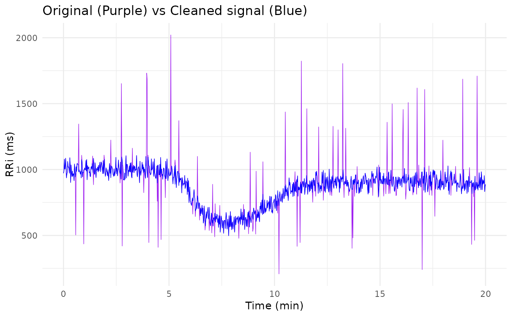

Clean RR-Interval Signal Using Local Smoothing and Adaptive Outlier Replacement
Source:R/clean_outlier.R
clean_outlier.RdThis function cleans an RR-interval (RRi) signal by identifying ectopic or noisy beats using a robust, locally adaptive approach. In the context of cardiovascular monitoring (such as for applying the Castillo-Aguilar et al. (2025) non-linear model), the function first fits a local regression (LOESS) to the RRi signal, computes the residuals, and then identifies ectopic beats as those with residuals exceeding a multiple of the median absolute deviation.
Usage
clean_outlier(
signal,
loess_span = 0.25,
threshold = 2,
replace = c("gaussian", "uniform", "loess"),
seed = 123
)Arguments
- signal
A numeric vector of RR interval (RRi) values.
- loess_span
A numeric value controlling the span for the LOESS fit (default is 0.25). Smaller values yield a more local fit.
- threshold
A numeric multiplier (default is 2) for the median absolute deviation (MAD) to determine the cutoff for flagging ectopic beats.
- replace
A character string specifying the replacement method for ectopic beats. Must be one of
"gaussian","uniform", or"loess"(default is"gaussian").- seed
An integer to set the random seed for reproducibility of the replacement process (default is 123).
Details
The function offers several replacement strategies for these outliers:
"gaussian"Replace ectopic values with random draws from a normal distribution, centered at the LOESS-predicted value with a standard deviation equal to the robust MAD.
"uniform"Replace ectopic values with random draws from a uniform distribution, bounded by the LOESS-predicted value ± the MAD.
"loess"Simply replace ectopic values with the LOESS-predicted values.
This adaptive approach ensures that dynamic changes in the RRi signal, such as those observed during exercise, are preserved, while ectopic or spurious beats are corrected without "chopping" the data.
Examples
# Simulate an RRi signal with dynamic behavior and ectopic beats:
n <- 1000
time_vec <- seq(0, 20, length.out = n)
set.seed(123)
signal <- 1000 -
400 / (1 + exp(-3 * (time_vec - 6))) +
300 / (1 + exp(-2 * (time_vec - 10))) + rnorm(n, sd = 50)
# Introduce ectopic beats (5% of total signal)
noise_points <- sample.int(n, floor(n * 0.05))
signal[noise_points] <- signal[noise_points] * runif(25, 0.25, 2.00)
# Clean the signal using the default Gaussian replacement strategy
clean_signal <- clean_outlier(signal = signal,
loess_span = 0.25, threshold = 2,
replace = "gaussian", seed = 123)
# Plot the signal vs cleaned signal
library(ggplot2)
ggplot() +
geom_line(aes(time_vec, signal), linewidth = 1/4, col = "purple") +
geom_line(aes(time_vec, clean_signal), linewidth = 1/4, col = "blue") +
labs(x = "Time (min)", y = "RRi (ms)",
title = "Original (Purple) vs Cleaned signal (Blue)") +
theme_minimal()
